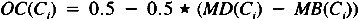

by Abraham Kandel
CRC Press, CRC Press LLC
ISBN: 084934297x Pub Date: 11/01/91
|
|
Fuzzy Expert Systems
by Abraham Kandel CRC Press, CRC Press LLC ISBN: 084934297x Pub Date: 11/01/91 |
| Previous | Table of Contents | Next |
Again, for convenience, we allow MD(Ci) to denote the value for the measure of disbelief function at the current t, the number of relations used to determine the disbelief in the conclusion. It is important to note that the measure of belief and measure of disbelief are calculated separately. Therefore, it is possible that MB(Ci) ≠ 1 - MD(Ci). To obtain relations which act on both the positive and negative part of a conclusion may require a bit more effort by the knowledge engineer and engender a very small number of additional queries of the system user. However, the clarity of reasoning provided by such a system is well worth the trade-off.
Given that measures of belief and disbelief in a conclusion have been calculated, we must come to an overall certainty for the conclusion. The overall certainty lies in the interval [0,1]. The value 0.5 indicates neither belief nor disbelief in the interval [0.5,1.0] our belief increases as the certainty approaches one, and in the interval [0.5,0] our disbelief increases as the certainty approaches zero. The overall certainty of a conclusion Ci is calculated as shown in the following definition.
The overall certainty of a conclusion is defined as:

The overall certainty, just defined, has the required characteristics which were previously discussed. We now have the mechanisms for determining whether to believe or disbelieve a conclusion based on one or more pieces of evidence about it. Some strategy about the number of relations to use to determine a conclusion, and when to stop trying to determine a conclusion, are necessary for an expert system implementation using this combination of evidence scheme.
All applicable relations may be applied to determine a conclusion. This is a straightforward scheme, but it is not very efficient. If there are many relations, and we use some that give us a strong measure of belief and no measure of disbelief, should we continue processing? Unless we have an unusual application for the expert system, we do not. In fact, to continue will require a great deal of extra processing time, and an extremely slow expert system is not likely to be accepted. This is clearly an area in which different approaches may be suitable for distinct problem areas. Again, in Fess, the algorithm which governs the determination of a conclusion is confined to a specific section and can be easily changed. The current algorithm used in Fess to determine a conclusion will be described in the following text.
If more than one implication relation that acts on a conclusion exists, we will use a minimum of two relations to determine the conclusion. We alternate in using relations which act to increase our measure of belief and our measure of disbelief regarding the current conclusion. This process continues until we run out of relations which act to increase MB or MD, or we have tried two of each type of relation and the overall certainty has not changed more than some value Δ. If we find the overall certainty has changed more than the Δ, we will continue the process until we run out of relations or, after attempting to increase our MB and MD, the overall certainty has not changed by Δ. If there are no more relations providing evidence upon the MB or MD, but we have not used at least two relations, or our overall certainty changed by more than Δ, we will continue using relations to determine the overall certainty. This continues until two relations have been used, no more exist which act on this conclusion, or the overall certainty is not changing by more than Δ.
The algorithm just described, while somewhat complex, provides for efficient search and conclusion determination. It attempts to ensure that both the measure of belief and disbelief are fully determined so that an erroneous reasoning path is not followed.
We have previously discussed finding the value of the conclusion of an implication relation by the use of fuzzy modus ponens. What is done with the conclusion when it has been determined with some truth value? It is used in the continuance of the reasoning process. The reasoning process halts when the system has come to a conclusion which provides the information that the user of the expert system seeks or there are no more relations available to determine an answer for the user.
Fess may operate in a limited forward chaining or a backward chaining mode. The mode is chosen by the system with the use of context relations which will be discussed later. When the system is operating in the forward chaining, it begins by choosing an initial implication relation for processing. An evaluation function chooses the best implication relation. If the conclusion is determined to be certain above a threshold, it is used to guide the choice of the next relation to be processed. The conclusion, a portion of it or a result from it, will be in the premise of the relation which is evaluated as the best one for processing. This process of determining a conclusion certainty, and proceeding to choose a new relation with some trace of the former conclusion in its premise, will continue until a conclusion is determined to have a certainty below the preset threshold, or a final conclusion, expert answer, is determined with a truth value above the appropriate threshold.
If a conclusion along the path is found to have a certainty below the positive threshold, and is not conclusively false, then other relations, which act upon the conclusion, are used. This process continues until the conclusion certainty is above the true threshold, or below the false threshold, or there are no more relations available to determine it. In this case, another path must be found, if possible.
In this system, the chaining is more directed than in the OPS style,14 match, recognize and act cycle. The system would not be applicable in the case of a planning or design problem.
| Previous | Table of Contents | Next |